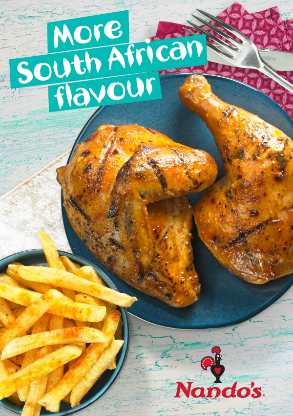
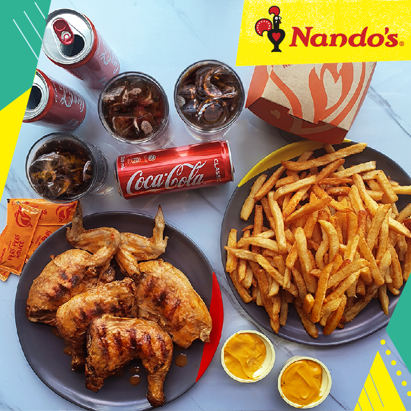
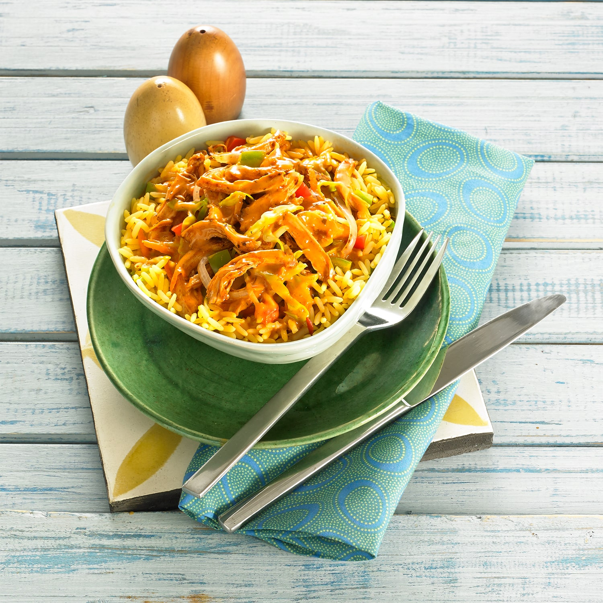
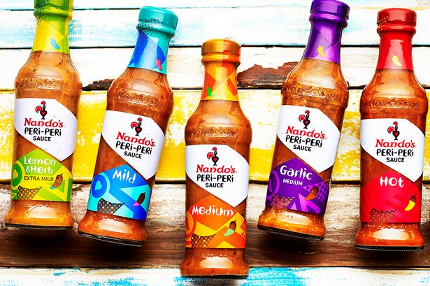

Nando's
At Nando’s, we select only the best succulent chickens and trim them of extra fat before they are marinated in Nando’s traditional Peri-Peri flavours… so the unique Nando’s taste is absorbed right down to the bone. Nando’s chicken is flamed-grilled, never deep fried, and basted in a choice of Peri-Peri flavour – mild, hot or extra-hot Peri-Peri or lemon and herb – until cooked to golden perfection! The chicken’s butterfly-cut ensures equal browning from the leg and breast right down to the thigh. Nando’s basting sauces are completely vegetarian. They also contain no preservatives, colourants or added MSG! The same is true of our chickens. Our chicken meals are also lower in saturated fat than many others!
   